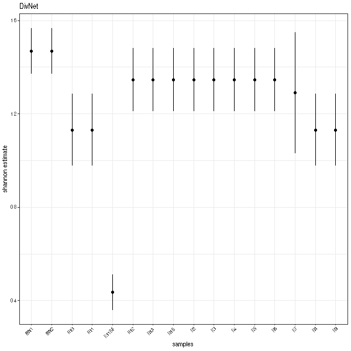
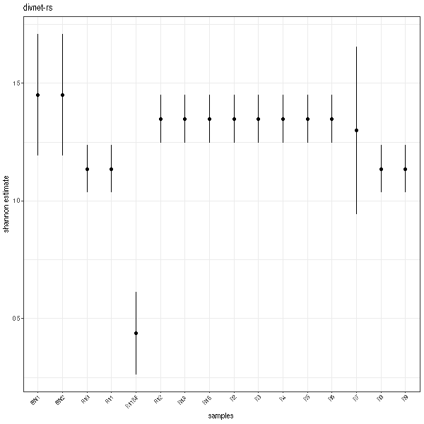

divnet-rs
DivNet is an R package for estimating diversity when taxa in the community co-occur via ecological networks. It leverages information from multiple samples and data about the samples (covariates) in order to give more accurate estimates of variance in the measured diversity. Possibly it's coolest feature is that, unlike most existing methods of measuring diversity, it uses models from compositional data analysis that take into account ecological networks in which taxa positively and negatively co-occur.
While the DivNet R package makes it simple to apply the algorithms from Willis & Martin 2020 to your data, it does have trouble with large datasets. This is where divnet-rs comes it. It is a Rust implementation of the DivNet algorithm. It allows you to successfully run much larger datasets even on your laptop!
In this book, you will find documentation and information for installing and using divnet-rs. Additionally, I will go over a couple examples and a tutorial to help you get started!
For more background information and the theory behind DivNet, please check out the original DivNet repository and the DivNet manuscript.
You can find the divnet-rs source code on GitHub.
Installing divnet-rs
I have successfully installed and run divnet-rs on both Debian Linux and
MacOSX. I haven't tested this out on Windows at all :)
Dependencies
divnet-rs is written in Rust. If you do not
have Rust, you must install it first.
divnet-rs depends on BLAS and LAPACK for fast numerical computation. While there are lots of different implementations, divnet-rs uses OpenBLAS. To install OpenBLAS, you will need a C compiler and a Fortran compiler. I recommend GCC, the GNU Compiler Collection for this. With the GCC toolchain, I was able to install on both Linux and Mac with no issues.
Note: If you already have gcc, and you're using a Mac, you should check that you have an actual gcc program. Often, you will use gcc from the command line, but it will actually be clang. You can check by running gcc --vertion and inspecting the output. I was not able to compile divnet-rs using clang.
Linux
If you don't already have gcc you could install it from your distro's package manager e.g., sudo apt-get install build-essentials or something similar. This will get you both gcc and gfortran. Also, you can check out the official gcc install docs.
Additionally you will need to install OpenBLAS. You can install it from source, but many distros also have it in their package managers.
You may need to adjust the LIBRARY_PATH and LD_LIBRARY_PATH environmental variables depending on how you installed the above software. See below for more info about that.
Mac
I used Homebrew to install GCC and OpenBLAS like so:
brew install gcc
brew install openblas
Given the way Homebrew installs these packages, I needed to tweak some environment variables so that Cargo and the Rust compiler could actually link to the libraries.
When I installed with Homebrew, the OpenBLAS libraries were in /usr/local/opt/openblas/lib and the GCC libraries were in /usr/local/lib/gcc/10. So I needed to set the LIBRARY_PATH and LD_LIBRARY_PATH environmental variables like so:
# For building
LIBRARY_PATH="/usr/local/opt/openblas/lib"
LIBRARY_PATH="${LIBRARY_PATH}:/usr/local/lib/gcc/10"
export LIBRARY_PATH
# For running
LD_LIBRARY_PATH="/usr/local/opt/openblas/lib"
LD_LIBRARY_PATH="${LD_LIBRARY_PATH}:/usr/local/lib/gcc/10"
export LD_LIBRARY_PATH
Note that if you already have them set, you will need to append rater than overwrite them (as I did when setting the OpenBLAS paths).
You should put that in either ~/.profile, ~/.bash_profile, ~/.zprofile, or whatever place you keep your shell startup configuration.
Installing from source
There are two options. You can either download a tagged release (recommended) or follow the master branch if you want the latest updates.
If you want to track the master branch, clone the git repository like so:
git clone https://github.com/mooreryan/divnet-rs.git
However, I recommend that you download a release as they are versioned.
Once you have the source code, cd in to the root of the source directory and
use cargo to compile the program. (Cargo will be installed when you install Rust.) Here is an example:
cd divnet-rs
cargo build --release
Note that this can take a while, but you will not have to compile the program each time you use it!
You should now have a compiled binary in ./target/release/divnet-rs. You will
probably want move or symlink the executable binary
(./target/release/divnet-rs) somewhere on your path. For example, if you want
to create a symlink to ~/bin, you could run something like this:
ln -s $(pwd)/target/release/divnet-rs $HOME/bin/divnet-rs
You can check that you have access to the divnet-rs binary with the which
command:
which divnet-rs #=> /home/ryan/bin/divnet-rs
If you see a path, then the linking worked! If not, then you can still just use
the program from its current directory (target/release/divnet-rs) or try and
figure out how to get it on your path.
Testing your installation
The divnet-rs repository includes some handy test files to check that
everything is working correctly.
Try it out!
divnet-rs ./test_files/small/config_small.toml
If all goes well, you should see some logging output that ends with a line like this:
[2021-01-14T02:59:49Z INFO divnet_rs] Done! Output file is: "./test_files/small/small_divnet_output.csv"
Additionally there are some automated tests that you can run with cargo test.
Usage
In this section, we will talk about how to use divnet-rs to analyze your data. Let's get started!
Input & Output Files
The divnet-rs GitHub page has some example R scripts to help you get data out of R and in to divnet-rs as well as scripts to help you get data from divnet-rs back into R for further analysis. Of course, you can also generate the input files by hand, but it is not as easy! They aren't the nicest R scripts you've ever seen, but they should help you to get started!
Input files
The divnet-rs program takes two input files: a count table and a file with
sample data. Both should be CSV files.
Count table
The count table (aka OTU table, aka ASV table) is a taxa-by-sample representation of your experiment.
Here is an example:
taxa,s1,s2,s3
t1,200,1,2
t2,210,2,1
t3,180,2,1
t4,1,230,235
t5,2,220,215
This data set has five taxa (t1, t2, t3, t4, t5) and three samples
(s1, s2, s3). Note that these can be named whatever you want.
The taxa specifier is ignored and so you can write whatever you want there.
E.g., if you have amplicon sequence variants, you could put asv there instead
of taxa.
The values are counts, so they should be positive integers only.
Sample data
The sample data file is a little weird looking, I will admit. It is basically
the output of the R function model.matrix. It converts your dummy variables
to 0 and 1.
Important note: the order of the samples in the sample data file has to match with the order of the samples in the count table file. This is not ideal, but currently that's how it works :/
A simple example
In this case, there is only one covariate: snazzy. Here, I have labeled it as
snazzyyes indicating that samples with a 1 are snazzy (i.e., positive for
condition snazzy) and samples with a 0 are not snazzy (negative for
condition snazzy). So s1 is snazzy, but s2 and s3 are NOT snazzy.
sample,snazzyyes
s1,1
s2,0
s3,0
Another example
Here are a couple of lines from the sample data file for the Lee dataset that's included in DivNet.
sample,charbiofilm,charcarbonate,charglassy,charwater
BW1,0,0,0,1
BW2,0,0,0,1
R10,0,0,1,0
R11,0,0,1,0
As you can see, the variable of interest is char. It has the following
columns:
charbiofilm(1for yes, it's a biofilm sample,0for no it is not)charcarbonate(1for yes, it's a carbonate sample,0for no it is not)charglassy(1for yes, it's a glassy sample,0for no it is not)charwater(1for yes, it's a water sample,0for no it is not)
Now the Lee data has a fifth category, alered. It is not listed here as that
is the way the model.matrix dummy encoding works. You don't need a column for
it, (and if you do include it in your dummy encoding things can get wonky) any
sample with a 0 in all the colunms is an altered sample.
Output files
Here is the output file you get if you run the example files in <source root>/test_files/small. (The little ones you see above!)
# this is replicate 0
replicate,sample,t1,t2,t3,t4,t5
0,s1,0.33855749713477606,0.34823818972504217,0.30865008153567924,0.0018295805613595625,0.0027246510431431564
0,s2,0.0030379849794267364,0.0028353087370401467,0.0033011806108468353,0.490330204063212,0.5004953216094743
0,s3,0.0030379849794267364,0.0028353087370401467,0.0033011806108468353,0.490330204063212,0.5004953216094743
# this is replicate 1
1,s1,0.3627204546824228,0.36468668498369233,0.26626637816414933,0.00008013857010885896,0.006246343599626745
1,s2,0.0006637323562423841,0.0027111558898110805,0.003702116838977756,0.5432176368099867,0.44970535810498213
1,s3,0.0006637323562423841,0.0027111558898110805,0.003702116838977756,0.5432176368099867,0.44970535810498213
# this is replicate 2
2,s1,0.5294663181856507,0.2428125790405528,0.22595059438495904,0.0016861984655594231,0.00008430992327797039
2,s2,0.003824488773323916,0.003824488773323916,0.005408643892378329,0.5034205045920187,0.48352187396895513
2,s3,0.003824488773323916,0.003824488773323916,0.005408643892378329,0.5034205045920187,0.48352187396895513
# this is replicate 3
3,s1,0.5901081082784421,0.22421302607955013,0.17869297960014005,0.0015961885594974962,0.005389697482370069
3,s2,0.0030619926513927457,0.0006994389587677033,0.004747225069582607,0.5271925248691112,0.4642988184511458
3,s3,0.0030619926513927457,0.0006994389587677033,0.004747225069582607,0.5271925248691112,0.4642988184511458
# this is replicate 4
4,s1,0.42087439504861085,0.3408217058601948,0.22533144275449316,0.0035274481524021776,0.009445008184299079
4,s2,0.004061119432165891,0.0007170056373956505,0.0007467384699807625,0.5003428103976993,0.4941323260627584
4,s3,0.004061119432165891,0.0007170056373956505,0.0007467384699807625,0.5003428103976993,0.4941323260627584
# this is replicate 5
5,s1,0.20558302906768744,0.49136400424687354,0.29390176182754923,0.005463507248674078,0.0036876976092156933
5,s2,0.000702351053334611,0.0024864420846098466,0.0032837333411371906,0.43124409424160054,0.5622833792793178
5,s3,0.000702351053334611,0.0024864420846098466,0.0032837333411371906,0.43124409424160054,0.5622833792793178
Again, not all that nice for human consumption, but it will be nice and easy to parse in R. Check out the scripts I mentioned above for an example of this!
Configuration Files
You control divnet-rs using a TOML configuration file
(config file).
Here is an example of one with lots of comments to help you see what's going on. Feel free to copy this file and use it as a model for your own datasets!
[model]
# Number of expectation maximization (EM) iterations
em_iter = 6
# Number of EM iterations to burn (i.e., throw out). Unlike mc_burn, this does
# NOT have to be em_iter / 2.
em_burn = 3
# Number of Monte-Carlo (MC) iterations. Must be even (see mc_burn for
# details).
mc_iter = 500
# Number of MC iterations to burn. It must be mc_iter / 2. If not, the program
# will abort.
mc_burn = 250
# Variance used for MH samples
stepsize = 0.01
# Perterbation magnitude for zero values when calculating logratios. (Any zero
# value will be replaced with this.)
perturbation = 0.05
# Number of bootstrap iterations for estimating the variance.
replicates = 5
# The "base" taxa to use in the logratios. The number represents the (0-based)
# index of the taxon you want. So 0 here means the first taxon, 1 means the
# second, and so on. Ideally it is a taxa observed in all samples. That's not
# likely though, so try a couple of highly abundant taxa to confirm the results
# are robust to the taxon choice.
base_taxa = 0
[io]
# If you use relative paths here, they will be interpreted relative to the
# directory from which you run the divnet-rs command. If things get weird with
# that, or you're using a job scheduler like slurm or torque, just specify the
# absolute path here instead.
# The path to your count/asv/otu table
count_table = "./test_files/small/small_count_table.csv"
# The path to your sample data
sample_data = "./test_files/small/small_sample_data.csv"
# The path to the file that divnet-rs will generate
output = "./test_files/small/small_divnet_output.csv"
[misc]
# An unsigned 64 bit integer used to seed the random number generator.
random_seed = 0
As you can see it is broken up in to three sections (model, io, and misc) each
controlling a different aspect of the software. The [model] section contains
config options for the actual model DivNet uses to estimate diversity. The
[io] section deals with specifying input and output files. Finally, the
[misc] section contains any options that don't fit in any other
category.
IMPORTANT: The program will abort unless mc_burn == mc_iter / 2. This is
*allows me to do some trickery to reduce the overall memory usage by ~1/3.
Number of threads
One thing that isn't in the config files, but something you will want to do is to run divnet-rs with the OPENBLAS_NUM_THREADS=1 environmental variable set. This will ensure that OpenBLAS is only using a single thread. In all my tests, divnet-rs will be between 25-50% faster with 1 thread for OpenBLAS. You run it like this:
OPENBLAS_NUM_THREADS=1 divnet-rs /path/to/config.toml
Or you could just set that in your system config files.
See Logging for how to combine this variable with the logging environmental variables.
Defaults
Currently there are no default values. This means that every config file you write has to explicitly list all of the options you see in the file above. I would like to eventually change this so you only have to specify values that differ from the defaults, but as of now, you will have to be explicit :)
That said, DivNet does have some defaults for the tuning of the algorithm. Here
is how you would set up the [model] section to use the defaults.
Note that divnet-rs is ~20x faster than the R
implementation. This means that depending on the size of your dataset, you
could crank em_*, mc_*, and replicates options up really high and see what
happens. I haven't really tried this out yet, but it might be interesting!
DivNet 'fast' default
[model]
em_iter = 6
em_burn = 3
mc_iter = 500
mc_burn = 250
stepsize = 0.01
perturbation = 0.05
replicates = 5
base_taxa = 0
DivNet 'careful' default
[model]
em_iter = 10
em_burn = 5
mc_iter = 1000
mc_burn = 500
stepsize = 0.01
perturbation = 0.05
replicates = 5
base_taxa = 0
Logging
divnet-rs logs various things to standard error during a run.
Log levels
There are multiple log levels. Here they are from least important to most important.
tracedebuginfowarnerror
By default divnet-rs only prints info, warn, and error messages.
If you want, you can turn on the lower level messages using the RUST_LOG environmental variable like this:
RUST_LOG=debug divnet-rs config.toml
That would tell divnet-rs to print all debug messages plus any messages that are of higher importance (info, warn, and error).
If you want fewer messages, you could use RUST_LOG=warn or RUST_LOG=error.
Recommendation
Generally the default log level is fine. It's also nice since you don't have to set any environmental variables!
If you have very large input files and want to see the most logging, for example to try and estimate the time remaining, you could turn on mode messages with RUST_LOG=trace or RUST_LOG=trace. It will put a lot of output though.
Setting config level and number of threads
You set the number of threads for OpenBLAS with an environment variable. If you want to set the log level and the OpenBLAS threads, you can do it like this:
OPENBLAS_NUM_THREADS=1 RUST_LOG=debug divnet-rs /path/to/config.toml
See Config Files for more info on the OpenBLAS thread options.
Examples & Tutorial
In this section, I will show you were to find examples and tutorials for running divnet-rs.
Examples
There are a couple of examples to help you get started in the test_files directory on GitHub.
In that directory, you will find a bunch of test data, input files, and config files. You can use these to get an idea of what kind of input data divnet-rs needs.
Full Tutorial
You can find the scripts and data for this walk-through on the GitHub page.
DELETE? There, I show you how to analyze the Lee dataset included with the DivNet R package with divnet-rs, including getting data out of R into the format that divnet-rs wants, running divnet-rs, and then importing data back in to how and how to use it.
Comparing DivNet and divnet-rs
I will use the Lee data grouped by phylum as in the DivNet docs.
Run DivNet and generate divnet-rs input files
First you should check out 1_lee_phylum.R. It is an R script for running DivNet on the Lee data aggregated by phylum. It also generates the data that will be used fir divnet-rs.
Run divnet-rs
Now you can run divnet-rs using the 2_lee_phylum_config.toml config file. Something like this:
divnet-rs ./test_files/lee_data_walkthrough/2_lee_phylum_config.toml
You will notice that it is faster, but I just want to make it clear that on a dataset as small as this one I would use the the R version of DivNet. Generally, you would only be using divnet-rs if whatever you want to do is impossible in the R version!
Import divnet-rs output back into R
To see how to import the data back in to R so you can work with it, check out 3_import_divnet_rs_data.R.
Wrap up
To try it out, assuming you haven't rearranged anything in the divnet-rs source directory, you can run the commands like this:
Rscript ./docs/lee_data/1_lee_phylum.R
OPENBLAS_NUM_THREADS=1 divnet-rs ./docs/lee_data/2_lee_phylum_config.toml
Rscript ./docs/lee_data/3_import_divnet_rs_data.R
Note the OPENBLAS_NUM_THREADS=1 part in front of the divnet-rs command. In my tests, forcing OpenBLAS to use a single thread results in much better divnet-rs performance. See this section of the divnet-rs manual for more information about this.
Plots
And here are the plots! One thing that you will notice is that the error bars are a bit different. This is because the MC-MH algorithm DivNet uses (and thus that divnet-rs uses) is dependent on random number generation. So you'll get some noise run-to-run.
DivNet

divnet-rs

Important differences from reference implementation
DivNet and divnet-rs are very similar and use the same algorithms. However,
there are some differences. I mention some of the important ones here.
Input & Output files
The input and output files are different. To see how to get files into
divnet-rs from R and then back in to R once divnet-rs is finished, see the
scripts in the Lee example directory.
Diagonal network only
The only network option is diagonal. Here is an
quote from Amy Willis
that supports this decision:
I would recommend network="diagonal" for a dataset of this size. This means you're allowing overdispersion (compared to a plugin aka multinomial model) but not a network structure. This isn't just about computational expense -- it's about the reliability of the network estimates. Essentially estimating network structure on 20k variables (taxa) with 50 samples with any kind of reliability is going to be very challenging, and I don't think that it's worth doing here. In our simulations we basically found that overdispersion contributes the bulk of the variance to diversity estimation (i.e. overdispersion is more important than network structure), so I don't think you are going to lose too much anyway.
The whole issue is worth reading.
If you have small enough datasets that the R implemntation of DivNet can handle them, just use that instead...it will let you estimate the network structure of your data!
Bootstrapping
Only the parametric bootstrap is available. You cannot do the nonparametric bootstrap.
Monte-Carlo iterations and burn
The MC iterations must be even, and the MC burn must be 1/2 of the MC iterations. This allows me to do a little trick to cut the overall memory usage by about 1/3.
Citing DivNet
divnet-rs is based on the DivNet, an R package to estimate diversity when taxa in the community co-occur via a ecological network.
If you use DivNet, please support the authors and cite their manuscript!
Willis, A.D. and Martin, B.D. (2020) DivNet: Estimating diversity in networked communities. Biostatistics. doi.org/10.1093/biostatistics/kxaa015
More useful information
For more background information and the theory behind DivNet, please check out the original DivNet repository and the DivNet manuscript.
You can find the divnet-rs source code on GitHub.
I wrote a blog post introducing divnet-rs. It it, I give more background information on the problems that DivNet attempts to solve and how it tries to solve them, talk a bit more about the differences in the Rust and R implementations, and do some benchmark comparisons between the two implementations.